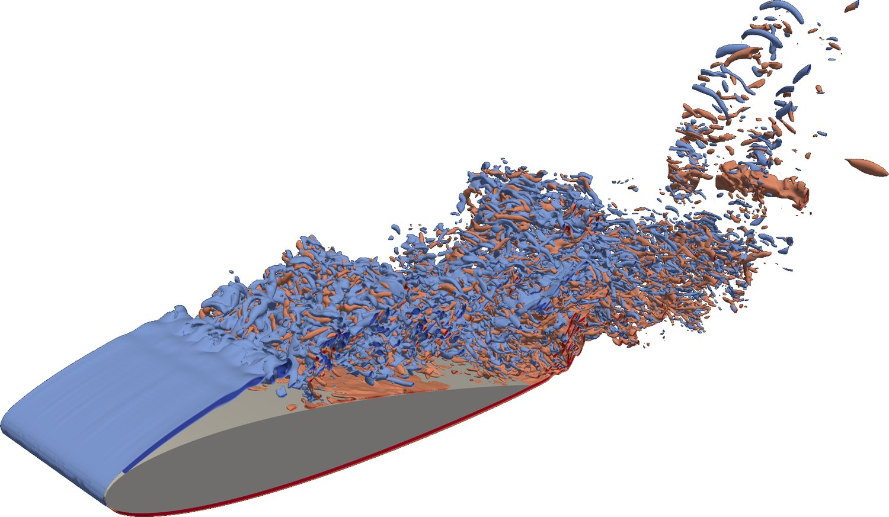
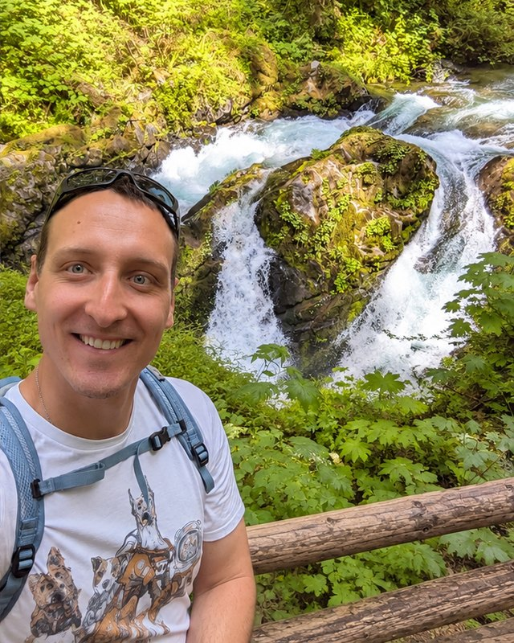
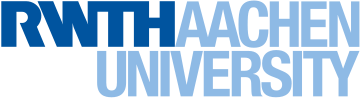
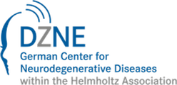

I develop machine learning for dynamical systems: reinforcement learning agents that learn to control them, models that learn their dynamics and causal structure from sparse, noisy data, and the mathematics that tells us when to trust either. My test cases range from turbulent flows to the progression of ALS.
The common thread is structure: symmetries, conservation laws, sparsity and causal structure make learned models reliable where more data and bigger networks do not.
IDENTIFY
What can we reliably learn from sparse, noisy data?
Measurements are scarce and noisy, and in medicine a patient may be seen only once. I develop methods that learn dynamics from such data and say what the data can and cannot determine. The same mathematics describes a wake behind a wing and the progression of ALS.
Latent dynamics (LaDID)ICLR 2024
Causal structure (D²CL)NMI 2023
CADENCEunder review
CONTROL
Can a learned controller be readable and safe?
Reinforcement learning finds strategies no engineer would design, but they are hard to trust. I build agents that learn from fewer trials and stay small enough to read. The next step is controllers that come with stability guarantees, so an engineer can sign off on them.
HydroGymNature 2026
SINDy-RLNat. Commun. 2025
Transonic buffetNat. Commun. 2024
GENERALIZE
Can one model work on systems it has never seen?
A model trained in simulation is only useful if it holds up on the real system. A network trained only on simulations measures wall-shear stress in real experiments, and HydroGym agents transfer to an unseen wing. Next: physics foundation models that flag their own errors.
Simulation to experimentJFM 2025
Zero-shot transferNature 2026
Neural conditional simulationunder review
Featured result · Nature 2026
HydroGym: an open benchmark where reinforcement learning agents learn to control fluid flows
Reinforcement learning has mastered games and robots, but fluid flows were out of reach: every trial is an expensive simulation, and there was no common place to compare methods. I conceived HydroGym to change that and led the team of 21 authors who built it. It is an open platform with more than 60 flow-control environments, from laminar wakes to turbulence at Reynolds numbers up to 4×105.
Agents trained only on simple flows reduced local skin friction by 38% on a three-dimensional wing they had never seen, at four orders of magnitude lower exploration cost than training on the wing itself.
Six of the more than 60 HydroGym environments. Each is a flow simulation that an agent observes and acts on.

HydroGym simulation, NACA 0012 at 12°, Re = 5×104
The goal is one agent that has practised on many flows and adapts to a new geometry in minutes rather than weeks.
Where HydroGym is heading: a generalist flow-control agent, pretrained across all environments, much like the foundation policies now emerging in robotics.
VECTOR-ALS: causal foundation models to find new treatment targets for ALS
ALS differs from patient to patient, which is one reason drug trials fail. Our consortium combines genetic, epigenetic, transcriptomic and clinical data from about 3,000 patients in one latent representation, finds biologically distinct subtypes, and uses causal AI to identify genes whose perturbation shifts a subtype toward health. The best candidates are then tested in neurons grown from patient stem cells. I am a co-PI and build the multimodal foundation model, trained on JUPITER, Europe's first exascale supercomputer.
Ongoing. One of 20 teams selected for the Longitude Prize on ALS in 2026; led by DZNE with KU Leuven, the University of Edinburgh, the Gladstone Institutes, UCL, the National University of Singapore and Stockholm University.
SINDy-RL: learn a small model of the physics first, then train the agent on it
Instead of a large neural network, the agent first learns a sparse equation for the dynamics and trains on that. It needs 10 to 100 times fewer interactions with the real system, and the resulting policies are interpretable and smaller than 10 kB. My part was the transfer to large-scale flow problems, the code implementation and the HydroGym results.
N. Zolman, C. Lagemann, U. Fasel, J. N. Kutz, S. L. Brunton, Nature Communications 16, 10714 (2025). Paper · Code
D²CL: learning cause and effect across thousands of variables
In biology, a drug target is only useful if changing it changes the disease, so correlations are not enough. D²CL combines convolutional and graph neural networks to learn causal relationships from high-dimensional data and partial prior knowledge. It identified new causal relationships among thousands of variables, tested against simulations with known ground truth and against unseen validation experiments on molecular data.
K. Lagemann, C. Lagemann, B. Taschler, S. Mukherjee, Nature Machine Intelligence 5, 1306 (2023), cover article. Paper · Figure: Fig. 2 of the paper, cropped, CC BY 4.0
Taming transonic buffet, the shock oscillation that limits how fast airliners fly
Near the speed of sound, the shock wave on a wing can start to oscillate and shake the aircraft, which caps its cruise speed. In wind-tunnel experiments, porous trailing edges substantially attenuated this buffet and also reduced noise. Pressure sensors could not be built into the porous material, so the pressure field had to come from images: RAFT-PIV, my deep optical-flow network, extracted density gradients from schlieren images at every pixel, and together with the measured velocity fields and the conservation equations they gave the full pressure field.
E. Lagemann, S. L. Brunton, W. Schröder, C. Lagemann, Nature Communications 15, 5020 (2024). Paper

About
I am a mechanical engineer by training and the first in my family to go to a research university. My PhD at RWTH Aachen started with a measurement problem: in particle-image velocimetry, you seed a flow with tiny particles, illuminate them with a laser sheet and try to recover the velocity field from two photographs. The standard method averages over small windows and blurs the finest structures, which were the ones I cared about. So I trained a recurrent neural network to do it instead. That network, RAFT-PIV, became a Nature Machine Intelligence cover, and I have worked at the meeting point of machine learning and physics ever since.
The question has grown since then. If a network can learn to see a flow, can it learn to control one, and when should we trust it to? I took that question to Seattle with my own fellowships, to the AI Institute in Dynamic Systems at the University of Washington, where HydroGym took shape. Today, at the German Center for Neurodegenerative Diseases in Bonn, I apply the same ideas to a very different system: how ALS progresses in patients who are often seen only once.
What I enjoy most is the moment a student sees an equation come alive in a live simulation. I try to create that moment in every course I teach.

2018 – 2022RWTH Aachen UniversityPhD (Dr.-Ing.) 2022, summa cum laudeDeep learning based optical flow for experimental fluid mechanics
2022 – 2023RWTH Aachen UniversityGroup leader for machine learning; habilitation 2023Representation learning for dynamical systems; causal learning in high dimensions
2023 – 2025University of Washington, SeattleGroup leader, AI Institute in Dynamic SystemsSample-efficient and robust reinforcement learning for dynamical systems

since 2025DZNE, BonnSenior researcher; lead of High-Performance AI ComputingFoundation models that predict how complex diseases progress over time
UW, 2024Co-lecturer with Steve Brunton for ME564 Mechanical Engineering Analysis, about 150 students
RWTH, 2018–23Fluid Mechanics I & II for more than 1,000 students a year; built the complete online version of the course during the pandemic and moved it from memorizing equations toward understanding, with live Python demonstrations
MentoringCo-advising four PhD students at the University of Washington; supervised one PhD student and eleven theses at RWTH